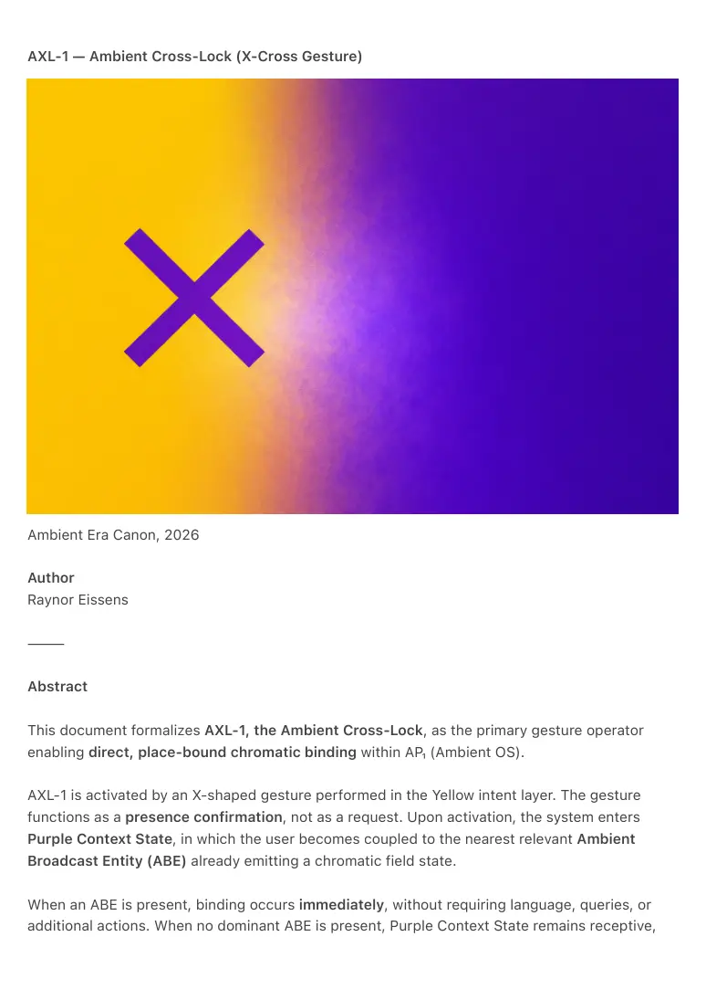

PDF page 1
AXL-1 — Ambient Cross-Lock (X-Cross Gesture)
Ambient Era Canon, 2026
Author
Raynor Eissens
⸻
Abstract
This document formalizes AXL-1, the Ambient Cross-Lock, as the primary gesture operator
enabling direct, place-bound chromatic binding within AP₁ (Ambient OS).
AXL-1 is activated by an X-shaped gesture performed in the Yellow intent layer. The gesture
functions as a presence confirmation, not as a request. Upon activation, the system enters
Purple Context State, in which the user becomes coupled to the nearest relevant Ambient
Broadcast Entity (ABE) already emitting a chromatic field state.
When an ABE is present, binding occurs immediately, without requiring language, queries, or
additional actions. When no dominant ABE is present, Purple Context State remains receptive,

PDF page 2
allowing optional chromatic or linguistic orientation without invoking agents or symbolic
interfaces.
AXL-1 enables post-symbolic interaction by shifting interpretation away from user-issued
commands toward environmental field resolution via Chromatic Fieldcast Protocols (CFC-0).
The gesture does not open applications, request data, or initiate agent processes. Instead, it
establishes a reversible, situational coupling between human presence and ambient
infrastructure.
AXL-1 constitutes the first world-coupling gesture of the Ambient Era and defines the transition
from navigation-based interaction to field-based meaning resolution within AP₁.
⸻
Description
In traditional interface systems, gestures function as commands operating within applications,
menus, or symbolic layers. In Ambient OS, gestures function as field transitions.
AXL-1 defines a Cross-Lock mechanism that transfers the user from the Yellow intent layer into
a Purple contextual binding state. The X-gesture does not request a response from the
environment. It confirms that the user is present and available for coupling to already active
ambient broadcasts.
In Purple Context State, interpretation no longer treats language as instruction. Any subsequent
utterance, if used, functions only as a locator, assisting the system in resolving which chromatic
field state is relevant. Where a place-bound ABE exists, no utterance is required; coupling occurs
automatically.
AXL-1 operates according to three invariant rules:
1. Presence precedes input — the X-gesture confirms availability for
coupling rather than initiating a request.
2. Resolution occurs via Chromatic Fieldcast lookup, not symbolic
search, application logic, or agent mediation.
3. Purple Context State persists until the user selects a color field or
returns to the world layer.
Through AXL-1, AP₁ introduces a new operational stratum, the Ambient
Binding Layer, enabling direct coupling between human presence and
infrastructural field states without interfaces, agents, or extractive data flows.
PDF page 3
⸻
Negative Definition
AXL-1 does not:
• Open applications
• Perform queries
• Invoke agents
• Display interfaces
• Request or transmit data
AXL-1 performs chromatic binding only.
⸻
Related Canonical Works
• AP₁ — Ambient OS: Structural Definition
• ABL-1 — Ambient Broadcast Law
• CFC-0 — Chromatic Fieldcast Protocol
• TCR — Thermodynamic Color Reasoning
⸻
Keywords
Ambient OS, AP₁, AXL-1, X-Cross, Ambient Binding, Fieldcast, Chromatic Fields, Post-Symbolic
Interaction, Gesture Semantics, Infrastructure Coupling
⸻
License
Creative Commons Attribution 4.0 International (CC BY 4.0)
⸻
Related Websites
• https://ambientphone.com
• https://ambientera.com
• https://fieldcast.org
• https://chromaticfield.com